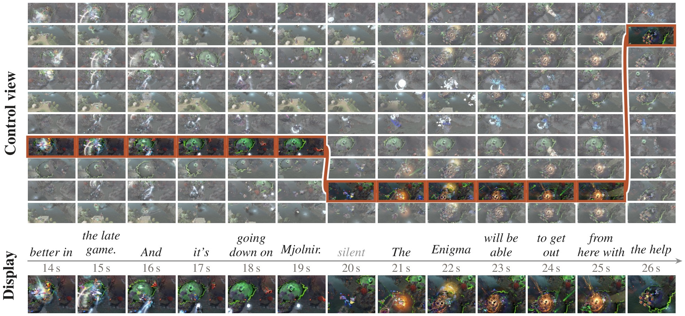
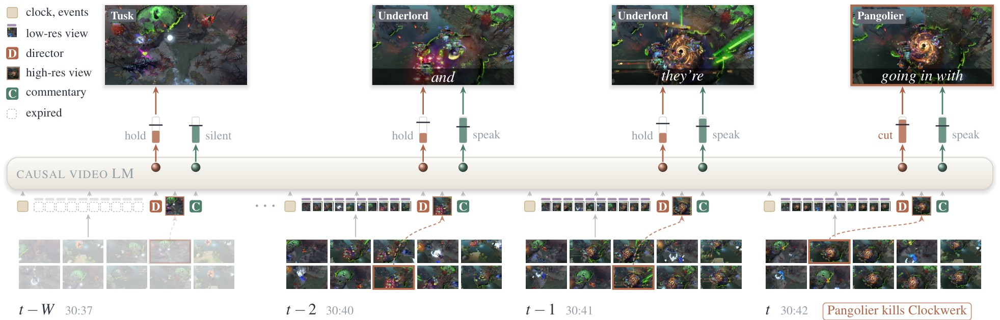
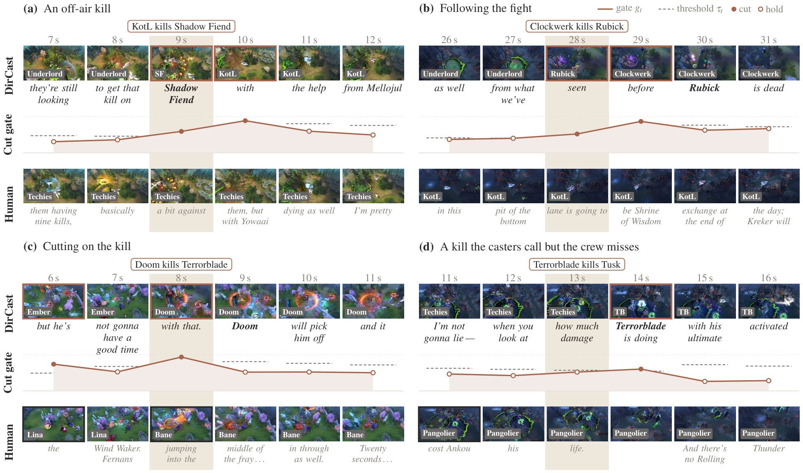
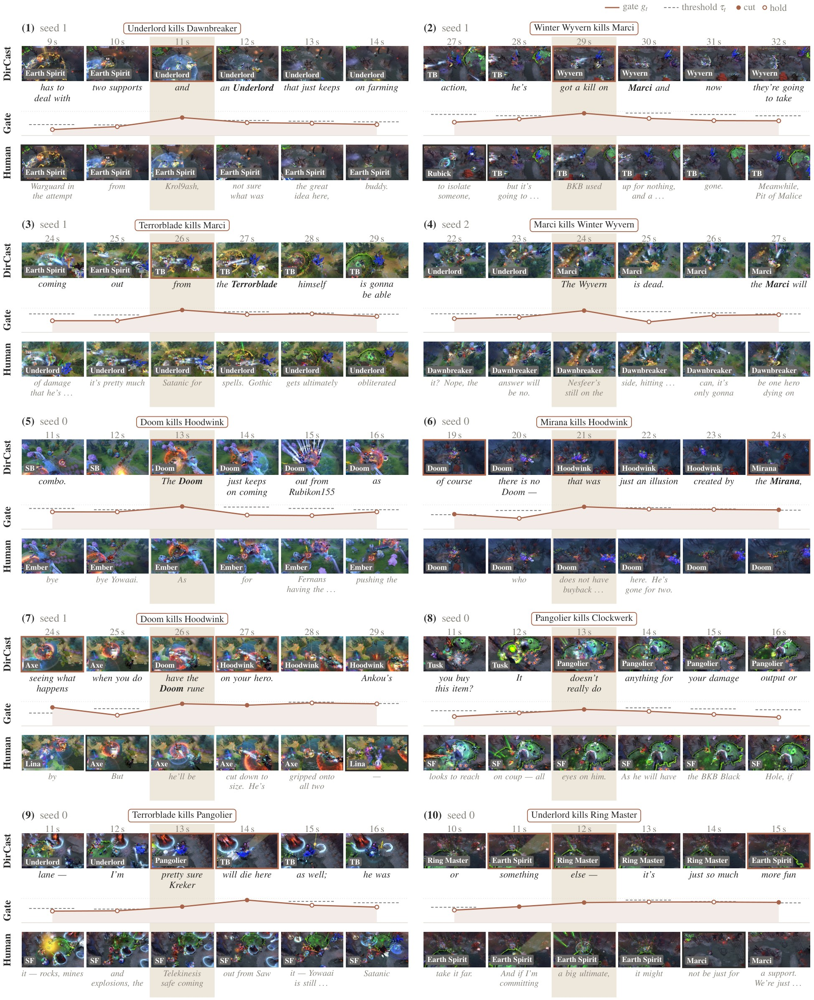
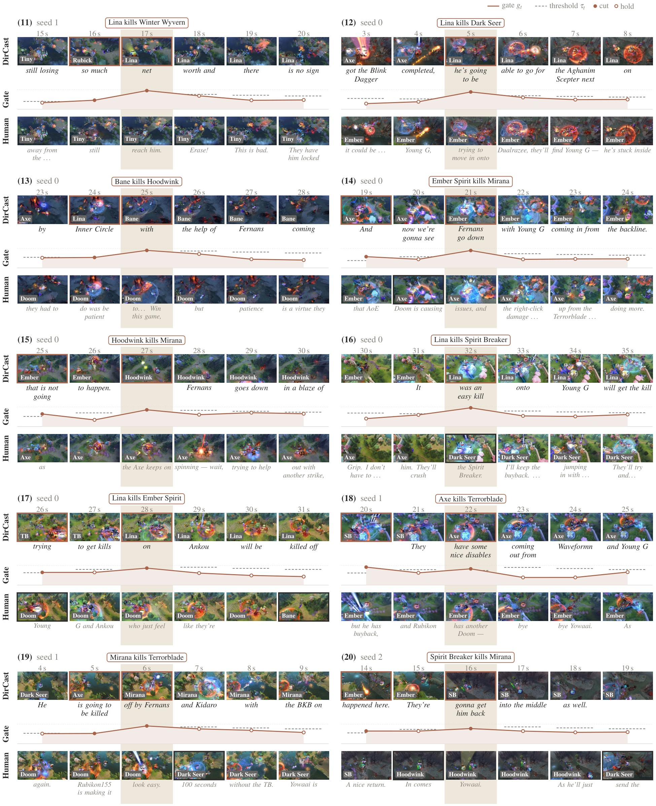

TL;DR. We propose DirCast, a single streaming video-language model that receives the raw camera of every player in a live Dota 2 match and, every second, both chooses which camera goes on air and commentates over its own choice.

Video
DirCast running on two held-out professional matches. Every cut and every word is the model's own output; nothing is edited. The panel on the right shows the ten hero cameras, and the bars show the hold-or-switch gate and the speak probability against their rate-controlled thresholds.
Control room
Step through a held-out match second by second. On the left is what DirCast puts on air and says; next to it is what the human crew aired and what the casters said. Below them, the ten hero cameras: DirCast's choice is lit in orange and the human director's is outlined in dashed blue. The gauges show the hold-or-switch gate and the speak probability, each against its rate-controlled threshold. Click any second on the timeline or any camera to look at it.
Abstract
A live esports broadcast needs a director who chooses which camera goes on air and a caster who talks over that choice, every second and without knowing what comes next. Streaming video language models have learned to commentate, but only over a broadcast that a human director has already produced. We study live broadcast production, in which a model receives the raw camera of every player and must both direct and commentate from the past alone. We present DirCast, a single streaming video language model that does both. Every second it scans all cameras at low resolution, decides with a hold-or-switch director whether and where to cut, and reads the chosen camera at high resolution before it speaks. Its context keeps what went on air and what was said and lets the other views expire, which bounds the cost of a stream of any length. We build a dataset of 27 professional Dota 2 matches with a camera for every hero, the human director's choices and the casters' commentary. DirCast directs better than rule-based and zero-shot directors including GPT-5, and its commentary wins 29.2 percent of comparisons against GPT-4o under the Proact-VL protocol, against 19.4 percent for the strongest of eleven streaming commentators that watch the human broadcast.
Method

- One stream. Directing and commentary run in one causal model, in the order a human crew works: look at all cameras, pick one, then talk about the picture that went on air.
- Hold or switch. A gate \(g_t\) decides whether to leave the current shot and a pointer \(\pi_t\) decides where to go, so holding is the default: \(P(c_t{=}k) = (1-g_t)\,\mathbf{1}[k{=}c_{t-1}] + g_t\,\pi_t(k)\).
- The program is the memory. Low-resolution views expire after \(W\) seconds, while the on-air views, the events and the words stay, so the cost per second does not grow with the stream.
- Training. Perturbed program rollouts teach the model to recover from its own wrong shots, and event-anchored targets teach it that kills are worth showing.
- Decoding. The thresholds for cutting and speaking follow the model's running rates toward those of human crews, \(\tau_t = \tau_0 + \gamma\,(\bar r_t - r^{*})\).
Results
All numbers are on the full test split of four unseen matches. Every model runs freely and only sees its own past decisions. Best results are in bold, second best underlined.
Directing
| Feed agreement | Cuts | Coverage | ||||||
|---|---|---|---|---|---|---|---|---|
| Director | Top-1 ↑ | Tol. ↑ | Any-vis. ↑ | P ↑ | F1 ↑ | /min | Kill ↑ | Fight ↑ |
| Rules | ||||||||
| Random (human rate) | 10.6 | 12.9 | 20.1 | 6.4 | 5.8 | 6.9 | 20.9 | 19.1 |
| Static | 17.1 | 20.4 | 23.0 | 0.0 | 0.0 | 0.0 | 20.9 | 19.2 |
| Action rule | 25.4 | 30.3 | 36.1 | 13.9 | 11.5 | 5.8 | 78.5 | 62.4 |
| Zero-shot VLMs | ||||||||
| Qwen3-VL-8B | 17.6 | 21.4 | 28.6 | 8.9 | 12.7 | 20.6 | 74.6 | 32.6 |
| Qwen3-VL-32B | 11.2 | 13.9 | 21.7 | 8.6 | 7.4 | 6.3 | 67.8 | 30.6 |
| InternVL3.5-8B | 19.1 | 22.9 | 28.9 | 6.2 | 10.8 | 56.3 | 72.9 | 24.1 |
| InternVL3.5-38B | 19.0 | 22.8 | 27.7 | 6.6 | 10.0 | 25.3 | 81.9 | 28.1 |
| LLaVA-OV-7B | 9.2 | 12.0 | 18.6 | 6.5 | 9.2 | 20.5 | 41.2 | 18.8 |
| Mistral-Small-3.2-24B | 13.6 | 17.0 | 24.2 | 6.1 | 9.3 | 26.7 | 59.3 | 23.3 |
| Kimi-K2.6 | 16.7 | 20.4 | 28.4 | 8.2 | 13.7 | 42.4 | 81.4 | 30.1 |
| GPT-5 | 13.5 | 16.7 | 24.8 | 6.7 | 11.6 | 51.7 | 85.3 | 33.0 |
| DirCast (ours) | 27.0 | 32.0 | 41.8 | 15.8 | 14.1 | 6.7 | 89.1 | 41.1 |
| Human director | 100 | 100 | 100 | 100 | 100 | 7.9 | 50.3 | 37.4 |
A cut is correct if it falls within two seconds of a human cut and goes to the same feed. The human crew cuts 7.9 times per minute. DirCast is the mean of three seeds.
Commentary
| LiveU | FinalQ | ||||||||||
|---|---|---|---|---|---|---|---|---|---|---|---|
| Method | Venue | CC ↑ | F1 ↑ | TimeDiff ↓ | Time | Rate | TextU | Fidelity | Contin. | Subst. | PAUC ↑ |
| Zero-shot, human program | |||||||||||
| LiveCC-7B-Base | CVPR'25 | 19.38 | 64.61 | 8.32 | 5.11 | 4.99 | 4.53 | 4.56 | 3.17 | 2.36 | 0.008 |
| LiveCC-7B-Instruct | CVPR'25 | 17.73 | 79.95 | 1.84 | 5.75 | 6.15 | 5.69 | 4.01 | 3.19 | 2.59 | 0.015 |
| Dispider | CVPR'25 | 6.70 | 0.69 | 30.64 | 1.36 | 1.94 | 1.64 | 4.60 | 1.34 | 1.15 | 0.000 |
| MMDuet | EMNLP'25 | 3.81 | 16.99 | 9.79 | 3.13 | 1.87 | 2.99 | 5.74 | 2.25 | 1.52 | 0.001 |
| LiveStar-8B | NeurIPS'25 | 1.86 | 16.69 | 3.03 | 2.52 | 3.12 | 5.91 | 3.89 | 2.44 | 1.96 | 0.001 |
| StreamingVLM | ICLR'26 | 14.64 | 65.47 | 1.16 | 5.97 | 6.43 | 4.73 | 4.01 | 3.10 | 2.43 | 0.008 |
| MMDuet2 | ICLR'26 | 3.71 | 26.18 | 5.03 | 3.87 | 3.40 | 5.19 | 4.10 | 2.33 | 1.89 | 0.001 |
| Proact-VLLiveCC | ICML'26 | 16.39 | 83.20 | 0.34 | 5.75 | 5.54 | 5.54 | 4.15 | 3.18 | 2.38 | 0.008 |
| Proact-VLQwen3 | ICML'26 | 17.73 | 83.21 | 0.34 | 5.79 | 5.49 | 5.63 | 4.54 | 3.38 | 2.48 | 0.012 |
| Trained on our data, human program | |||||||||||
| LiveCC-7B-FT† | CVPR'25 | 14.85 | 13.41 | 16.22 | 2.54 | 3.32 | 3.26 | 5.39 | 2.59 | 1.53 | 0.007 |
| Proact-VLQwen3-FT† | ICML'26 | 18.25 | 83.08 | 0.34 | 5.39 | 4.20 | 4.52 | 5.04 | 3.10 | 2.11 | 0.014 |
| Trained on our data, self-directed program | |||||||||||
| DirCast (ours) | 29.21 | 78.22 | 0.30 | 6.57 | 6.50 | 5.92 | 4.97 | 4.00 | 2.95 | 0.024 | |
Proact-VL protocol, judged by GPT-5. CC is the win rate against GPT-4o. † Fine-tuned on our training split. The baselines comment on the finished human broadcast, while DirCast comments on the program it directs itself.
Examples
Kills from the test matches that happen away from the shot on air. The human broadcast shows a hero who is not involved, while DirCast cuts to the fight within a second.



Citation
@article{gao2026dircast,
title = {DirCast: Live Esports Directing and Commentary with a Single Streaming Video-Language Model},
author = {Gao, Zixian and Xiu, Lixin and Luo, Penghao and Wu, Erwin and Zhang, Kaipeng},
journal = {arXiv preprint},
year = {2026}
}